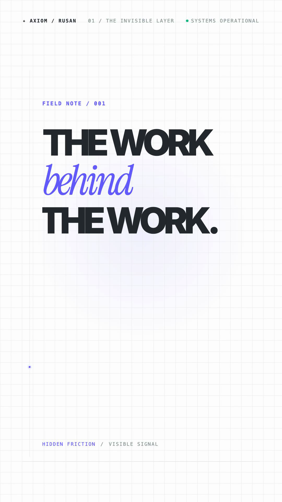
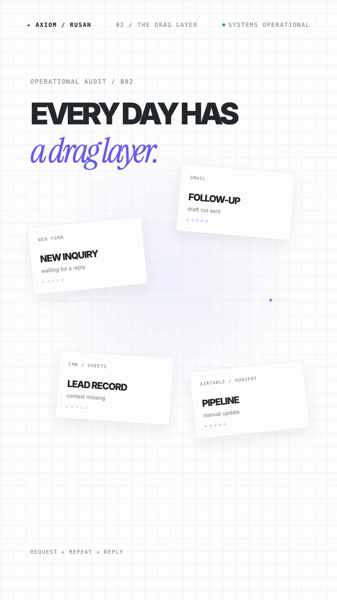
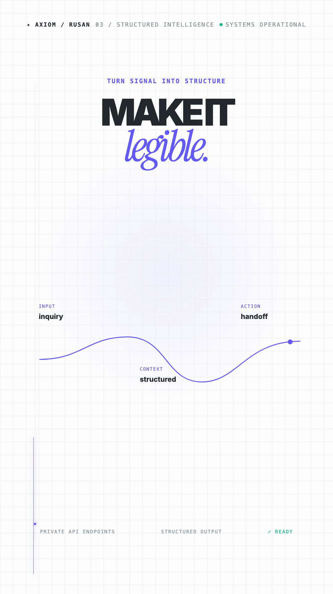
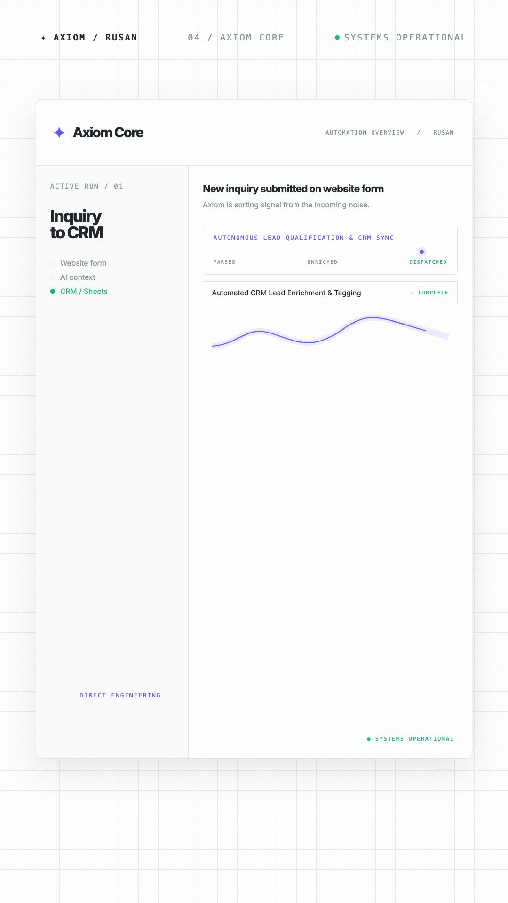
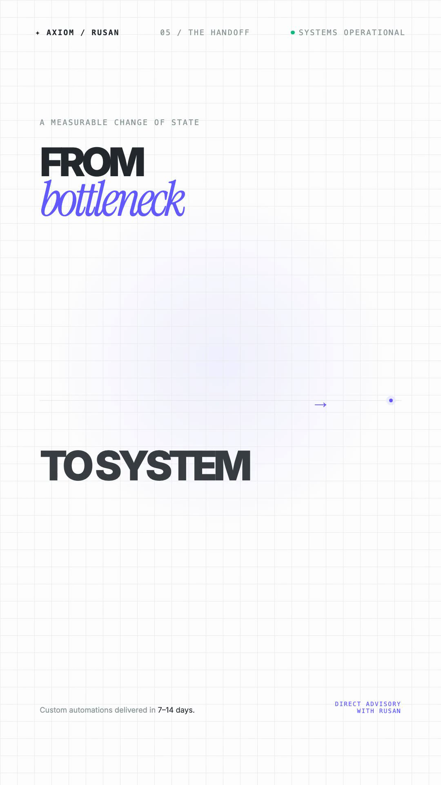
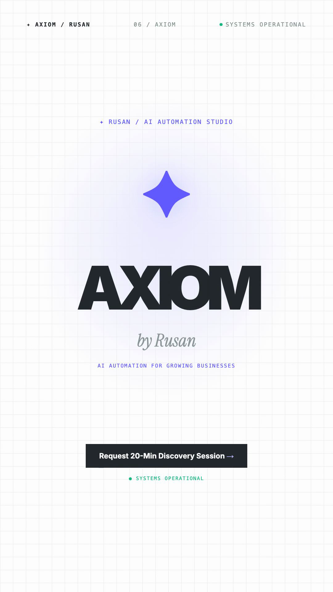

00.8 sec / 025
The invisible layer
Editorial type names the operational work hiding beneath the visible business.
Axiom’s site speaks in the language of practical systems: inspect the bottleneck, structure the signal, connect the tools, and hand back an operating layer the team can trust.

Editorial type names the operational work hiding beneath the visible business.

Web forms, inboxes, CRM, and pipelines drift into disconnected fragments.

A single indigo trace turns the noise into input, context, and action.

A living workflow carries an inquiry from website form to CRM dispatch.

The trace becomes an earned typographic change of state.

AXIOM by Rusan closes the loop with the site’s direct discovery CTA.